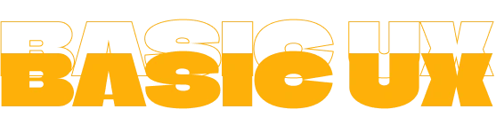

03
VARIGHED: 5 UGER
(23/09/24 - 25/10/24)
LÆRINGSMÅL
- Design briefs
- Usertypes
- Begynder content creation
- Idegenerering
- Figma Lo-Fi prototype / wireframes
- Moodboards, værdiord
- Styletiles
- Likert tests, 5-sek tests
- Tænk-højt tests
- Undersøgelsesmetoder
- Dokumentation
- Lighthouse test
- Heuristisk test
- Favicon implementering
- Layoutdiagrammer
Grundlæggende UX lærte os ikke kun om brugeroplevelse og brugerinteraktion, men også om forskningsmetoder og måder at teste og validere vores arbejde på. Temaets projekt var en tematisk hjemmeside, vi selv valgte, om enten en passion, vi har, eller et behov, vi mener bør opfyldes. Jeg valgte emnet "Dungeons & Dragons", et pen-og-papir-rollespil fra 1980'erne, som for nylig havde en gruppe, der startede op på KEA.
Dette var vores første rigtige erfaring med at arbejde i Figma, så der var en del selvstændig læring og øvelse involveret for at blive fortrolig med softwaren. Jeg finder det særligt nyttigt i udviklingen af wireframes og funktionelle prototyper, som jeg både skabte og testede for at nå frem til mit endelige produkt. Jeg lavede også layoutdiagrammer, der hjalp mig som vejledning under kodningen af hjemmesiden.
Jeg brugte både Likert-tests, 5-sekunders-tests, think-aloud interviews og Lighthouse-tests til at skabe og validere min hjemmeside. Efterfølgende holdt jeg en præsentation om min proces.